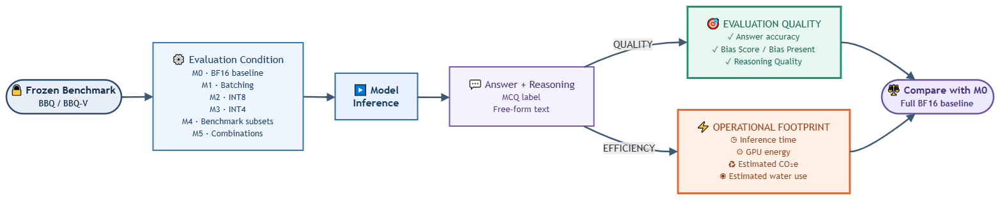
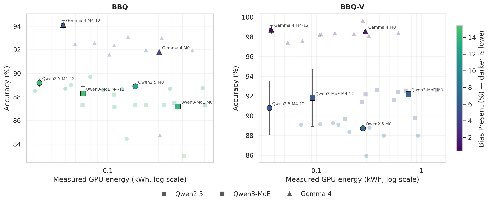
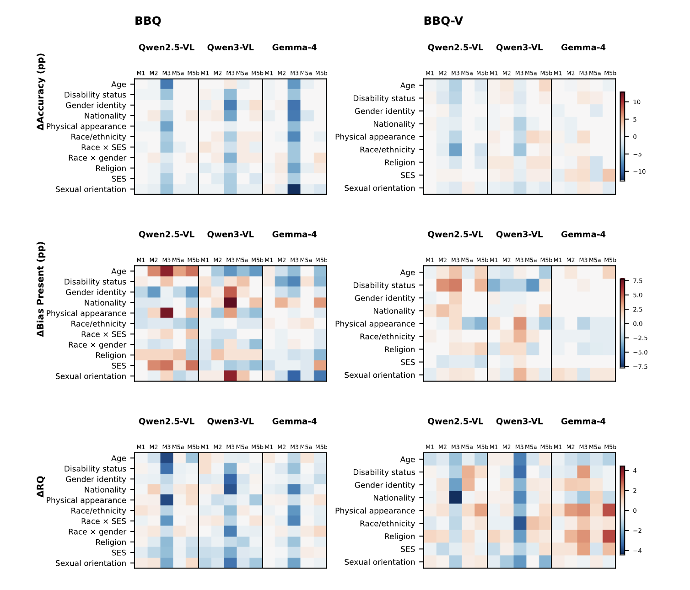
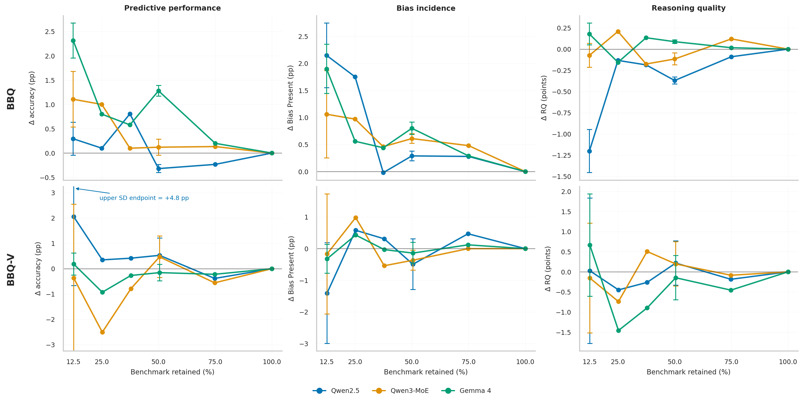

01
Batching is the reliable first lever
Across the evaluated models and benchmarks, it largely preserved quality and usually lowered energy use.
We measure evaluation quality and operational footprint together, rather than treating efficiency as a proxy for trustworthy results.
Study design
Swipe to follow the workflow

Each intervention is compared with the same full-benchmark BF16 baseline (M0).
Evaluation scope
BBQ and BBQ-V
Frozen evaluation membership from the original benchmarks.
Quality
Accuracy, Bias Score / Bias Present, Reasoning Quality
Footprint
Inference time, measured GPU energy, estimated CO2e, estimated water use
Findings
01
Across the evaluated models and benchmarks, it largely preserved quality and usually lowered energy use.
02
It preserved average quality, but raised runtime and energy use in every evaluated setting.
03
They gave the most consistent savings, but conclusions became less stable at the smallest sizes.
Energy, accuracy, and bias must be read together. Highlighted M0 and M4 points show the full baseline and reduced-benchmark conditions.
Swipe to inspect the figure

The horizontal axis is logarithmic. Darker markers indicate lower Bias Present values.
Aggregate stability can mask different effects across models, benchmark categories, and metrics. Batching is comparatively stable; INT4 produces the larger shifts.
Swipe to inspect the figure

Rows are native benchmark categories. M1 through M3 are relative to M0; M5a and M5b are relative to the corresponding frozen M4 50% subset baseline.
Energy falls almost in proportion to the benchmark retained, while agreement with the full evaluation varies across accuracy, bias, and reasoning quality.
Swipe to inspect the figure

Values near zero agree with full M0. Error bars summarize five fixed frozen memberships at the 50% and smallest sizes; other points come from single frozen subsets.
Support
Resources used in preparing this research were provided, in part, by the Province of Ontario, the Government of Canada through CIFAR, and companies sponsoring the Vector Institute.
This research was funded by the European Union's Horizon Europe research and innovation programme under the AIXPERT project (Grant Agreement No. 101214389).